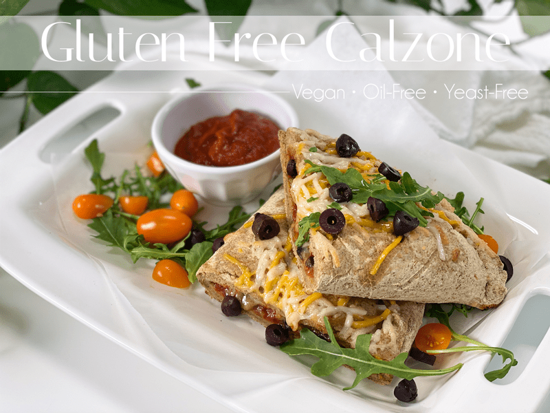
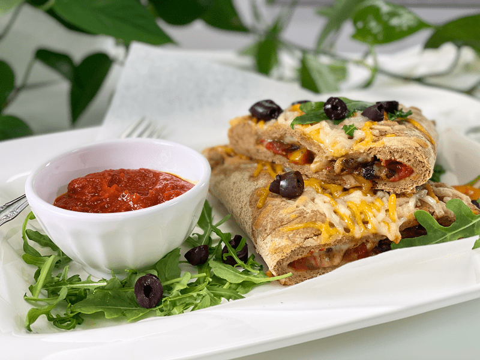
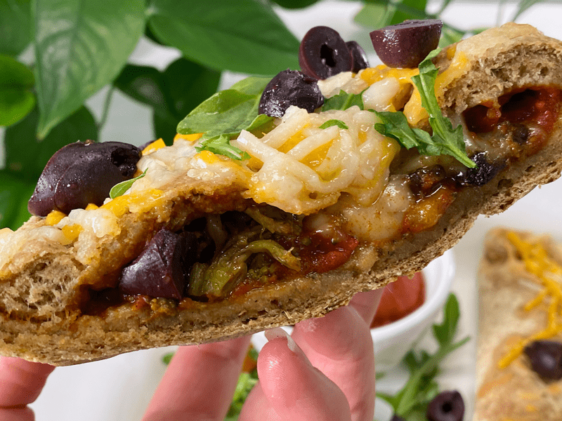
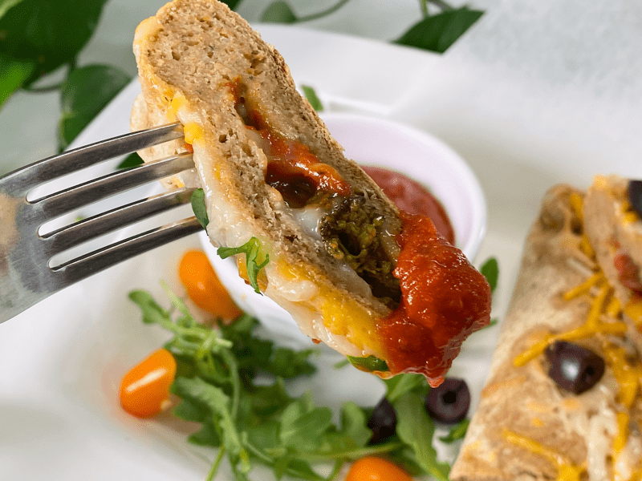

Homemade Veggie Calzone | Gluten-Free | Vegan | Yeast-Free | Oil- Free
Are you ready to up your kitchen game? Today, I want to share with you how to make vegan, gluten-free, yeast-free, oil-free calzone! A calzone is an Italian oven-baked folded pizza, often described as a turnover, that is filled with cheese (vegan in our case), vegetables, and sauce… then baked to perfection until the dough is crispy on the outside and chewy on the inside. Pretty much anything that goes on a pizza can go into a calzone.

The fillings are placed on one-half of the circular-shaped pizza dough, the dough is then folded over, pinched, sealed, and baked. Prep a handful of these to have on hand throughout the week. They reheat really well, providing a quick, filling, nutrient-dense meal in a matter of minutes.
I have had visions of creating this recipe for quite some time, so I was excited when I finally turned my idea that was scribbled on paper into the final creation that landed on our lunch plates and then into our bellies. I typically get really excited when I present a plate of food to Bob. One would think, after all these years and all the plates of food that I have made for him, that the excitement would diminish… it doesn’t and hasn’t.

When I placed the calzone down in front of Bob, his eyes grew wide. “What’s this?” he asked with a big smile on his face. I told him I made us calzone for lunch! We love it, I loved it, he loved it. We moaned with delight bite after bite. The crust had that toothsome chew that we all know and love when it comes to pizza crust, and it was packed full of flavor. I served a small bowl of extra pizza sauce for dipping, but another delicious, raw, vegan choice is my Discovered Valley Ranch Dressing.
I am going to mention this several times throughout this post, but this recipe is VERY filling due to all the fiber in the dough recipe. We ended up enjoying this dish for three other meals, which was perfect because right now we are doing tons of work out in a new pasture that we are developing, and we get quite hungry when lunch rolls around. Nothing like hard work and good food to round out the day.

Family Quality Time
Whether you are a family of two, three, or ten… the best part about calzones is that everyone can customize their own. Gather up a spread of ingredients, divide up the dough, and let your family go at it! I shared below the ingredients I used for our calzones, but here are some other ingredient ideas:
Teachniques (teaching techniques) Oh, I created a new word!
- When rolling out the dough, make sure that you roll it fairly thin so the calzone isn’t TOO bready. This dough is very filling due to the high fiber content. But be mindful not to roll it TOO thin, or it will break when trying to form the calzone and in transferring it to the baking pan.
- After you have the calzone formed, it’s vital that you make 3 slits on the top of each calzone, and it doesn’t hurt to make a few more along the edge of the crust. These cuts help to release air from the dough while it’s baking, so it doesn’t force air to come out in places that you don’t want.

This Recipe Yields…
How many servings this recipe yields is up to you. As a base, it will make 2 large calzones. But depending on the size of each participant’s appetite, you may want to cut each calzone in half or thirds. This dough recipe is HIGH in fiber and is very filling, so I recommend serving up smaller-than-normal-sized pieces, alongside a salad. For the sake of this recipe, I am going to be making 2 large calzones, therefore I am dividing the dough into two balls. If you want to make smaller ones, divide the dough accordingly.
- Two calzones (for the hungry man) = 2 servings
- Two calzones (for a light lunch) = 4 servings
- Two calzones (for kiddos) = 8+ servings
 Ingredients
Ingredients
Yields 2 large calzones
Filling
- Pizza sauce of choice
- Vegan shredded cheese
- 1 diced red/yellow bell pepper
- 2 cups sliced mushrooms
- 1/2 cup diced onions
- 1-2 cups steamed broccoli
- Sea salt
Dough
- 1 cup (100 g) gluten-free, rolled oats, ground
- 3/4 cup (100 g) sorghum flour
- 1/2 cup (100 g) raw hulled buckwheat, ground
- 5 Tbsp (40 g) arrowroot powder
- 1 tsp (4 g) Italian seasoning
- 1 tsp (4 g) baking powder
- 1/2 tsp (3 g) baking soda
- 1 tsp (6 g) sea salt
- 1 Tbsp (22 g) raw honey or maple syrup
- 2 cups (16 oz) water
- 5 Tbsp (30 g) psyllium whole husks
Preparation
Calzone Filling
- In a large frying pan, sauté the veggies over medium-high heat until everything is fork-tender.
- Try to dice everything into same-sized pieces; this will ensure even cooking.
- Cooking the mushrooms until they brown in color will bring out more of their meaty flavor.
- Sprinkling a little sea salt over the veggies while they cook will not only add a little flavor, but the salt will help break down the cell walls of the veggies so they cook better.
- Use any other ingredients you want for the fillings (just make sure it is precooked).
Calzone Dough
Psyllium Gel
- Quickly whisk the water and psyllium husk powder in a mixing bowl. It will instantly start to gel, which is to be expected. Set aside while you prepare the remaining ingredients, so it can thicken.
- Preheat the oven to 350 degrees (F).
Dry Ingredients
- In the mixing bowl that we are going to knead the bread in, whisk together the oat flour, sorghum flour, buckwheat flour, arrowroot, Italian seasoning, baking soda, baking powder, and salt.
Mixing the Dough
- Add the psyllium gel and drizzle the honey or maple syrup around the bowl.
- Using either a hand mixer or a free-standing mixer with dough attachments, knead for 5 minutes (set a timer on your phone) to ensure that it gets kneaded enough (don’t we all love feeling needed?).
- Start the mixer on low until the flour is folded in, then turn it up one speed. If you start off at too high a speed, the flour will jump out of the bowl.
- Divide the dough into 2 balls (424 g per ball).
- Lay a piece of parchment paper in front of you on the counter, sprinkle with a little flour, and roll the dough out to an 11″ circle. Dock the dough using either a docking tool (shown in the photo below) or use fork tips to poke holes in the dough.
- Add the pizza sauce, spreading it to the center of the dough, making sure to stop about 1″ before you reach the edges.
- Add the filling and cheese all on top of the sauce.
- Fold the dough over so the edges match up, and starting from one corner, start pinching and rolling the dough over onto itself. It will look like a thick crust. Wet your fingers if it needs a little coaxing to stay in place.
- Make 3 surface cuts on the top of the calzone and make a few surface cuts around the edges of the crust. This creates air vents so the dough doesn’t push ingredients out while baking.
- Add a little more cheese on top (if desired)
- Repeat all the steps to make the second calzone.
- Transfer the same piece of parchment paper to a baking pan and bake on the center rack for roughly 25 minutes.
- When it’s done baking, cut into pieces and enjoy!
Storing Calzones
- Store any leftovers in an airtight container and place in the fridge.
- To Freeze: Once you have prepared your calzones, you can freeze them while they are raw or cooked. Either way, place them on a baking sheet and allow them to completely freeze in a single layer. Then, store them in an airtight container or freezer-safe plastic bag.
- To Reheat: Thaw frozen calzones in the refrigerator for 3 hours or until thawed all the way through. Bake raw calzones according to recipe instructions. Bake cooked calzones for half the time or until they are heated through.
© AmieSue.com